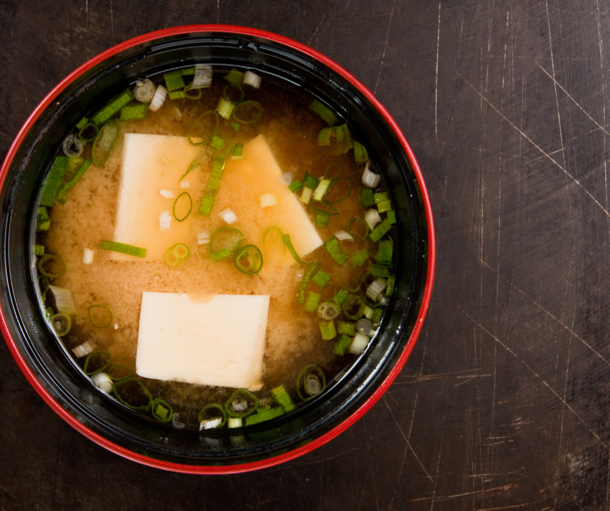

Soyabeans, Soybeans, Edemame - all in the same!
Introduction to Soybeans Soybeans are a globally traded and highly versatile agricultural commodity. They play a significant role in the global food industry, serving as the world's largest source of animal protein feed and the second largest source of vegetable oil. Over the past two decades, soybean production has more than doubled, growing into a staggering $123 billion market. This growth is closely tied to the increasing global demand for meat products, where soybeans are used extensively in livestock feed. Additionally, soybeans are a common ingredient in various human food products, including cooking oils, meat and dairy substitutes, and a wide array of processed foods.
Commodity Overview
The vast majority of global soybean production is used to feed animals. Globally traded and highly versatile, soybeans are the worlds largest source of animal protein feed and the second largest source of vegetable oil.
Government
In the U.S., multiple factors have boosted soybean production over the last decade. These factors have included government policies supporting agricultural production through protection or subsidies, biofuel mandates, international demand, and periods of high prices for agricultural commodities. Acreage for soybean production increased by 10 percent in the U.S. between 2019 and 2020 as a result of these factors.
